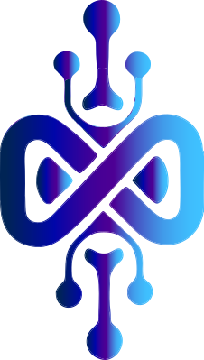

MODUS AXON Intelligence System
MODUS AXON no es una agencia. Es un método vivo. Nacemos de la convergencia entre la lógica implacable del software y la adaptabilidad orgánica de los sistemas vivos.
"Bio-Digital Futurism" es nuestra filosofía operativa: diseñamos sistemas tecnológicos que respiran, evolucionan y minimizan su huella. Cada decisión técnica debe ser eficiente, estéticamente superior y consciente del entorno.
Cualquier sistema. Perfeccionado. Sin residuos.
La disciplina del void. Tres fondos oscuros definen la profundidad del sistema. Un único acento neon señala exactamente lo que importa.
Dos fuentes, cuatro roles. Cada uno irremplazable.
Inter aporta legibilidad y neutralidad técnica al ecosistema de MODUS AXON. Funciona en densidades altas de información sin perder claridad ni precisión. Optimizada para pantallas de alta resolución con kerning superior.
Dos configuraciones oficiales. El isotipo permanece intacto en ambas.

El vacío oscuro es el lienzo. La información emerge como luz desde la oscuridad.
Sistemas vivos que respiran. Tecnología con conciencia ecológica. Eficiencia como responsabilidad.
El único acento neon señala exactamente lo que importa. Sin decoración vacía.
Sin carga extra. Performance es estética. La velocidad del sistema es parte del diseño.
Geometría de la era digital con raíces en lo natural. Angular y vivo al mismo tiempo.
Cada versión mejora la anterior. Los sistemas no se reemplazan: evolucionan.
Tokens aplicados a elementos interactivos. Coherencia en todo el ecosistema.